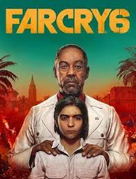

UPDATES BY DEMON.........
TECHNOLOGY IS THE FUTURE.

FARCRY HAD BEEN RELEASED , BUT WOULD IT GET LOVE BY THE FANS?
OVERVIEW
Your wait had been over
farcry 6 had step to our console and pc!!!
Farcry 6 by Ubisoft had made a huge hipe among the fans after releasing its trailer on
according to the fans the most attractive thing was its main villain of yara Anton Castillo
it is said to set in an imaginary city island called "Yara" and is the president
of this city is Anton Castillo
Farcry had seen to be no for this made and made a huge buget for this game he appointed Yawn Carlo
for the acting Anton Castillo of and Anthony Gulzaris for the acting of DIEGO
Farcry had also known for its one of the most brutal villain
After The Release
According to the gameplay of a youtuber 'theRadBrad' we can see that in this game
YES ,we can choose between a male and female protagonist and we know that this is an idea taken from the Assassin's creed
but the name of the main protagonist would be same "Dani Rojas"
Like other Farcry games it has too FPS view but we can see our protagonist in cutscenes
which is much better features of this series
this game's story focus on the society and the brutalness of our villain Anton Castillo
there are total 2 ending in this game and for now i will not tell you about ending it will be a spoiler
this game has lot of blood , abusive language, wars and ruthless dictator which gives this game
M rating means this game has been deemed inappropiate for gamers under 17
means this game is 17+ and all the rest things are same from other farcry games
yes the graphics are insane they descrided Yara city beautifully , I love it.
Features of this game
yes,no doubt the story and missions are of insane level
this game is an open world style so, after the mission there are many fun things you can do such as horse riding, riding with buddies
you can visit jurassic park,you can play rooster figthing minigame,you can convert your car almost in tank, takeout chopper
air dashing,boat ridding,scanning cars and much more............
RATINGS
IGN rated it 8/10
metacritic gave 75%
Eurogamer rated 3/5
Audience gave it 3.8 stars out of 5
"Farcry is some of the most fun i've had with this series in nearly decade."_ IGN
and IGN told it 8 points great.
and I will give it 8 points out of 10
SCREENSHOTS


PLATFORMS
It is available at Playstation 5, Playstation 4, Windows, Xbox X series,Xbox S series, Amazon Luna and Xbox one
More about us
thanks for visiting our page mates,
we post updates at every sunday
for giving suggestions and information about our website you can contact us as given below:-
email:-www.Maazmoulvi18@gmail.com
instagram:-maaz_moulvi
Thank you peeps:)